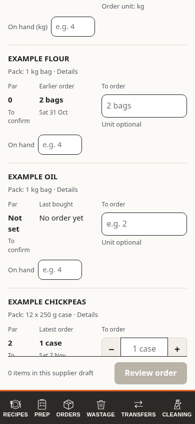
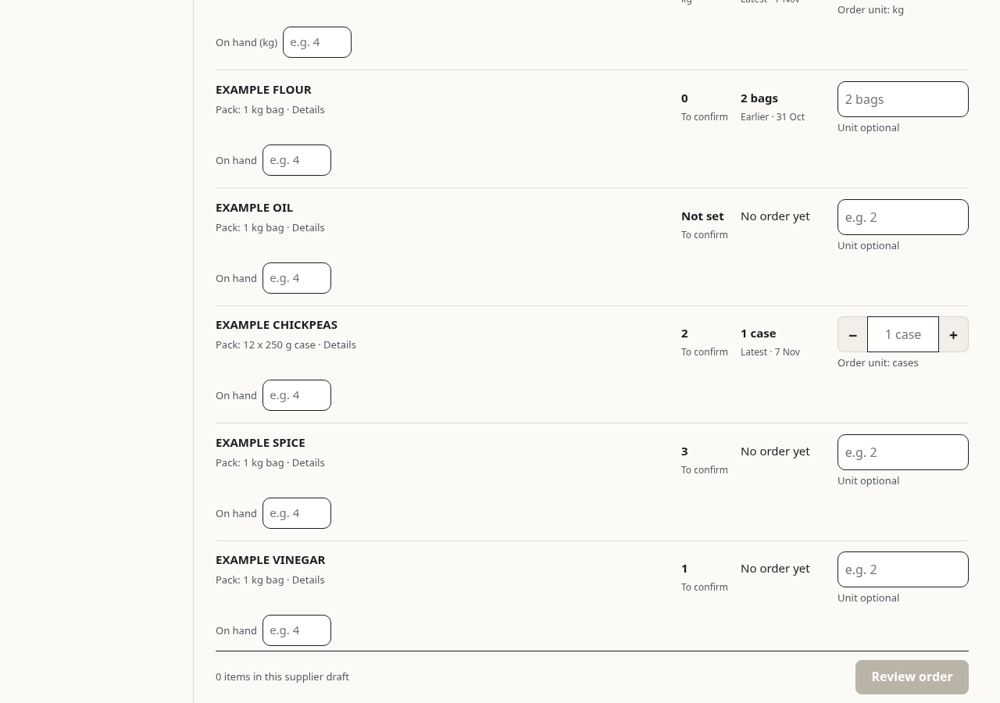

Label the reference
Keep the last quantity and date in place. Add a short Latest order or Earlier order label beside that reference.

Reading priorityLast purchase, then which order it came from.
- Strength
- The smallest change. The previous quantity and date stay visible as a quick reference.
- Cost
- The short status must remain readable. Measured row height is unchanged at 390, 768 and 1280 px in this fixture.
- Extra taps
- None to read the earlier quantity and date.


Show the laptop preview
